V1 Can be found here.
V2 Can be found here.
In 'Call Me By Your Shade'
—named cheaply after a seemingly good movie that I haven't gotten to see yet—you're given a pseudo-random phrase associated with a color in some way; your goal is to use the color controls provided to match the secret color as close as you possibly can. Hints are provided after each of your 10 guesses, in the form of percentage in general-closeness and high-or-low position of color values (RGB/HSL). Can you find the color?
Genre: Puzzle, Strategy
Platform: Desktop-only
Aesthetics -
The current aesthetic of this site is very simple, with a monochrome color scheme. This is the general look that I will be sticking with, however if time allows I would like to add some further interactivity there.
Gameplay -
Throughout the game, players will have full control of an in-depth color picker, including a hue wheel, 6 color sliders (for RGB/HSL values)--with incremental arrow buttons for each--, and a brightness slider. while the UI is quite straight-forward in itself, I may add a brief introduction widget that appears when it's the user's first time playing.
Mockups
"PATTERN SPACE" Is the leftover space outside of the gameboard (which I may set at a static aspect ratio) where I hope to be able to place randomly-selected patterns based on scheme color.


Other Information
This project will be a continuation of my Project 2, adding further functionality and cleaning things up throughout to (hopefully) hit all of the requirements asked of most others who are starting fresh. I messed with PixiJS for a while, and didn't really feel much excitement in making my own stuff on it, so with how happy I was with how my Project 2 came out, I figured there really wasn't any better option. Adding onto something that I've already made, though, I'm aware that a lot is going to have to change in order for my work to seem adequate compared to others', and I feel good in that because I have a lot of ideas I want to put into this. When it comes to code used for this project from others (of which all is directly credited), I have two generic libraries (jQuery and colorJS) and two more specific libraries (PitPik colorpicker and the SVG color function) that are already being used. I don't know yet what additional libraries I might want to add to this project from here on; those will likely come as soon as I realize I have a major functionality that's beyond my depth in coding, at least for a project of this particular depth. I'll speak with professors about that as the time comes.
About the Developer

My name is Luke Mavroudakis, and I'm a 2nd-year Game Design & Development student (with a recently-enrolled minor in Modern Language - Japanese) at Rochester Institute of Technology. Since coming to school I've *developed* a love for development, mainly in things I just think are cool like my concept for this project. I hope for that love (and some successful projects that come from it) to take me far in the future, but as I work on myself in the meantime I hope to integrate my older love for art/music into the mix in larger ways than I've had the chance to in the past.
Development Log
- Replaced the game-screen layout with one mirroring my concept sketch
- All values for positioning of the game-screen items had to be completely rewritten between screen aspect ratios that have longer width than height and vice versa, so I found a reliable way to have CSS calculate the equivalent value in terms of vw and vh, translating from one to another.
- The screen now has a static layout, providing empty space where necessary to best center and fit the game-screen
- Fixed a bug with the color-wheel implementation that made a click outside of it on one of its sliders to cause the selector in the color wheel to jump to the edge of the wheel closest to what was clicked on
- Implemented (semi)-static color-wheel and brightness-slider cursor positions when in width-prominent aspect ratio, as they used to keep their top and left attributes static which would make them appear to fly away when changing window size in that case
- Made the text and border on the testPatch change to dark gray when on a color with luminance higher than 50, and light gray when lower than 50
- Also implemented into historyPatch once created
- Added loading graphic to clue box before the clue loads in
- Optimized clue printing to not cut words in half (though idk why it wasn't just doing that in the first place, I DELETED CODE)
- Modified external color-picker code to make test patch color 100% opacity
- Implemented a new menu layout specifically for round 1, with the guessButton in a more prominent position
- Transitions to the default game layout, allowing space for the distance and highOrLow blocks, once incremented past round 1
- Automatically resets to round 1 layout once game ends
- Optimized dynamics of mainMenu
- Added media query to ensure nothing (untasefully) overlaps before the designated breaking point (height less than 400px)
- Made the CMBYS logo able to dark/light on either of its components, based on a randomizer; the text below automatically turns light/dark to contrast the "SHADE" piece due to them needing to overlap at certain window aspect ratios
- Meticulously touched up automatic site color pallette algorithm
- Added back and forward functionality (via a custom ES6 class, colorGuess) to historyPatch to view all past guesses for a given round
- The highOrLow panel now also indicates the "high or low" comparisons (as well as RGB/HSL values) of present OR PAST guess, whatever is currently displayed on the historyPanel
- Finally fixed the last bit of bugginess with the color wheel cursor (I think)
- Conquered the beast!!! (FINALLY figured out how to utilize the colorPicker code to alter RGB/HSL values incrementally with buttons on the game screen)
- Implemented tutorial "slideshow" (Help button)
- Swapped APIs, as I realized the one I've been using is not reliable for it's purpose
- ColourLovers API ---> Color-Names API by David Aerne
- So many more actually color-derivative phrases, and actually allows for randomized output (unlike the other)
- It's probably not the best to swap something like that out last minute, but it's pretty much the core piece of the game so this kind of brings the whole quality of the project a step up
- API data still fetched with jQuery in the exact same method, doing the exact same things as before
- Added game clues to local storage and Game History panel